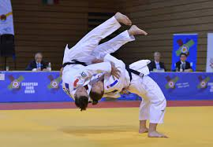

JUDO |
|
|
Home Judo Sambo |
Judo, meaning "gentle way", is a modern Japanese martial art (gendai budo) and combat sport, that originated in Japan in the late nineteenth century. Its most prominent feature is its competitive element, where the object is to either throw one's opponent to the ground, immobilize or otherwise subdue one's opponent with a grappling maneuver, or force an opponent to submit by joint locking the elbow or by applying a choke. Strikes and thrusts (by hands and feet) - as well as weapons defences - are a part of judo, but only in pre-arranged forms (kata) and are not allowed in judo competition or free practice (randori).
Lets see how it looks like  |
Created by Germans,2023 | |